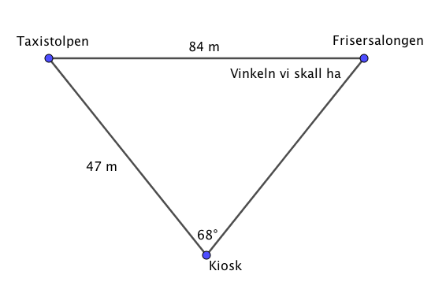
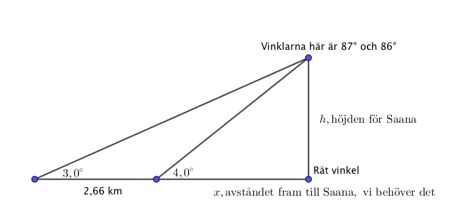

7. Sinussatsen
Sinussatsen är en utveckling av sinus som vi använder oss av i en rätvinklig triangel. Med hjälp av sinussatsen klarar vi av att bestämma längder för sidor eller storlekar av vinklar i en triangel.
Härledning av sinussatsen:
Sinussatsen är: \( \dfrac{a}{\sin \alpha} = \dfrac{b}{\sin \beta} = \dfrac{c}{\sin \gamma} \).

Exempel 1 För en triangel vet vi att två vinklar är 15o och 85o och att sidan mellan dessa är 4,5 cm. Bestäm längden av de övriga sidorna.
Exempel 2 En trädtopp syns under vinkeln 15o från ett visst avstånd. Då vi förflyttar oss 10 m bakåt syns trädtoppen under vinkeln 8o. Bestäm höjden av trädet.
Uppgifter
- Vad har vi för nytta av sinussatsen? Hur skiljer den sig från Pyhgagoras sats?
Med sinussatsen kan vi bestämma längder och storlekar av vinklar i trianglar som inte är rätvinkliga. Vi behöver veta storleken av vinkeln och längden av motstående sida för att kunna bilda förhållanden.
Bestäm längden av sidan BC. Svara med en tiondel centimeters noggrannhet.

Sinussatsen ger oss \( \dfrac{\mid BC \mid}{\sin 47^{\circ}}=\dfrac{7,4}{\sin50^{\circ}} \).
Längden är \( BC=7,065 \) cm.
- Två sidor i en triangel är 4,0 cm och 4,5 cm. Vinkeln mot sidan 4,5 cm är 75o. Bestäm längden av den tredje sidan och storleken av de andra vinklarna.
Vi ritar en bild.
Vi bildar följande förhållandet \( \dfrac{\sin \alpha}{4} = \dfrac{\sin 75^{\circ}}{4,5} \) som ger vinklen 59,2o.
Då är \( \beta = 180^{\circ} - (75^{\circ} - 59,2^{\circ}) = 45,8^{\circ} \).
Den tredje sidan får vi med förhållandet \( \dfrac{b}{\sin 45,8^{\circ}} = \dfrac{4,5}{\sin 75^{\circ}} \). Längden är \( 3,33\ldots \) cm, alltså 3,3 cm.
- Ett fartyg som färdas rakt längs en farled ser en fyr på babords sida. 7,1 km senare befinner sig fartyget så att de ser samma fyr på samma avstånd. Hur många km från fyren befinner sig fartyget då fartyget har rört sig 70o sett från fyren?
Rita bild.

Vi har en likbent triangel vars basvinklar är 55o, kommer från \( \dfrac{180-70}{2} \).
Vi får att \( \dfrac{7,1}{\sin 70^{\circ}}= \dfrac{x}{\sin55^{\circ}} \) som ger \( x=6,189 \) km.
Alltså 6,2 km
- Från fönstret i en kiosk ser man sträckan mellan en taxistolpe och dörren till en frisersalong i vinkeln 68o. Från kiosken till taxistolpen är det 47 m. Avståndet mellan dörren till frisersalongen och taxistolpen är 84 m. I vilken vinkel ser man sträckan mellan kiosken och taxistolpen från dörren till frisersalongen?
Vi ritar en bild.

Vi använder oss av sinussatsen och bildar: \( \dfrac{47}{\sin \alpha} = \dfrac{84}{\sin 68^{\circ}} \). Vi kan även kasta om täljarna och nämnarna, förhållandet är samma, \( \dfrac{\sin \alpha}{47} = \dfrac{\sin 68^{\circ}}{84} \).
Vi får vinkeln \( \alpha = 31^{\circ}\).
- Enligt en karta är ytan på Kilpisjärvi sjö 473 m över havsnivån. Från isen på sjön ser en skidåkare toppen av Saana fjäll 3,0o ovaför horistonalplanet. Efter att ha skidat 2,66 km närmare Saana ser skidåkaren toppen i vinkeln 4,0o i förhållande till horistonalplanet. På vilken höjd ovan havsnivån ligger toppen av Saana fjäll?
Vi får följande figur

Vi bildar ekvationerna med hjälp av sinussatsen, \( \dfrac{h}{\sin 3,0^{\circ}} = \dfrac{x + 2,66}{\sin 87^{\circ}} \) och \( \dfrac{h}{\sin 4,0^{\circ}} = \dfrac{x}{\sin 86^{\circ}} \).
Ekvationssystemet löser vi på dator, se till att ha vinkelinställningen på grader!

Höjden är 1029 meter över havsytan.
- En del av Centralgatan i Helsingfors har gjorts om till gågata. Området är belagt med Penroses plattor, som uppfanns av den engelske matematikern Roger Penrose på 1970-talet. Med hjälp av dessa kan ett plan beläggas med plattor på oändligt många sätt, utan att mönstret blir periodiskt. Plattorna har två olika former: drakar och pilar. Bägge är fyrhörningar. Vinklarnas storlek och längden av en del av sidorna framgår av figuren nedan.

Beräkna längden av de övriga sidorna med tre decimalers noggrannhet.
Beräkna plattornas areor med tre decimalers noggrannhet. [V11, 7]
Fundera, hur lönar det sig att dela in fyrhöringarna? Har de någonting gemensamt?
\( 2\cos 36^{\circ} \approx 1,618 \)
Arean för drake är 1,539 och arean för en pil är 0,951.
- Bevisa följande mha sinussatsen: Förhållandet för längden av två sidor är lika stort som förhållandet mellan de motstående vinklarnas sinusvärde.
Sinussatsen ger oss att
\( \begin{array}{rcll} \dfrac{a}{\sin \alpha} & = & \dfrac{b}{\sin \beta} & \mid \cdot \dfrac{\sin \alpha}{b} \\ \dfrac{a}{b} & = & \dfrac{\sin \alpha}{\sin \beta} \\ \end{array} \)
Alltså har vi visat det som vi skulle visa.